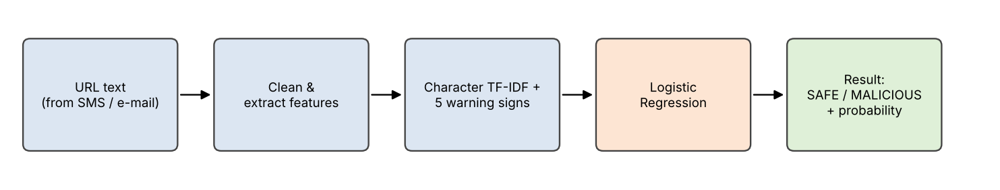
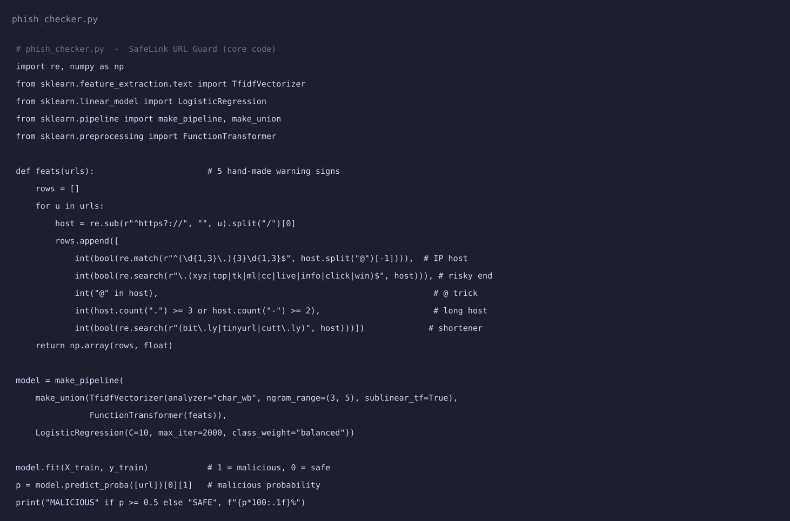
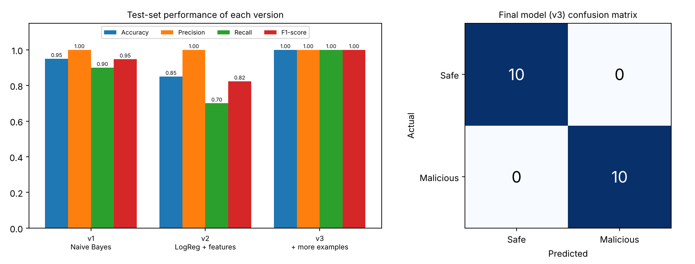
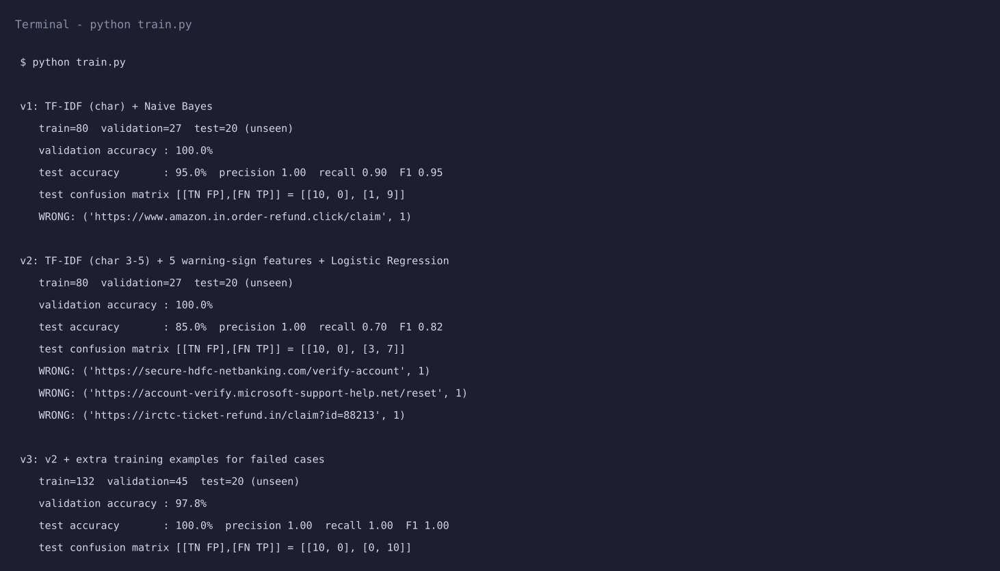
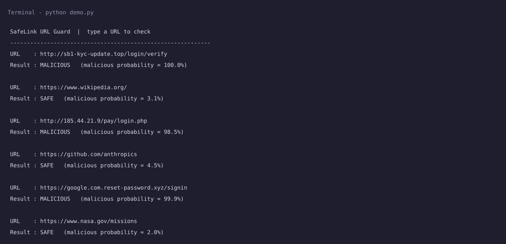

An AI application that reads a web link received by SMS or e-mail and tells you, before you click, whether it is malicious or safe.
Aarush Singh | KU202606117 | B.Tech(Hons.) GEN-AI-A, Karnavati University | Practical 10A
People get fake links every day in bank alerts, refund messages, prize offers and job offers. Many click without checking and lose passwords or money. A quick tool that checks a link first can reduce this risk.
Supervised machine learning (text classification). It learns from URLs already labelled malicious or safe.

Workflow: URL, features, Logistic Regression, result.

Core code of the application.
Each version was tested on 20 hand-written URLs that the model never trained on.
| VERSION | WHAT CHANGED | ACCURACY | PRECISION | RECALL | F1 |
|---|---|---|---|---|---|
| v1 | TF-IDF (char) + Naive Bayes | 95% | 100% | 90% | 0.95 |
| v2 | TF-IDF (char 3-5) + 5 warning-sign features + Logistic Regression | 85% | 100% | 70% | 0.82 |
| v3 | v2 + extra training examples for failed cases | 100% | 100% | 100% | 1.00 |


The finished checker on new URLs. It gives a label and the malicious probability.

Five slides that summarise the project.
Fake links steal passwords and money.
SafeLink URL Guard labels a link as Malicious or Safe.
URL, then TF-IDF and warning signs, then Logistic Regression, then result.
Test accuracy 95%, 85%, then 100%. Precision 100%.
AI can warn users before they click. Next: more real data and live URL look-ups.
Testing and step-by-step improvement fixed every mistake found on the test set, so the project met its expected outcome of 90% or more.
View code on GitHub Back to top